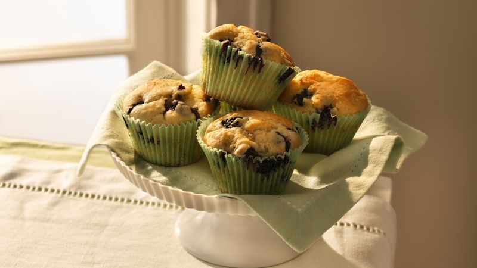

Blueberry Muffins

Description
Moist and delicious blueberry muffins.
Ingredients
- Betty Crocker Wild Blueberry muffin and quickbread mix
- 2/3 cups water
- 1/2 cups vegetable oil
- 2 eggs
Steps
- Heat oven as directed on box
- Place paper baking cups in muffin cups, or grease bottoms of each muffin cup
- Drain blueberries, rinse and set aside
- Stir muffin mis, water, oil and eggs in medium bowl just until blended )batter may be lumpy(
- Gently stir in blueberries and divide batter among muffin cups
- Bake as directed on box or until golden brown and tops spring back when touched
- Cool 5 minutes, loosen and carefully remove from pan
Return Home